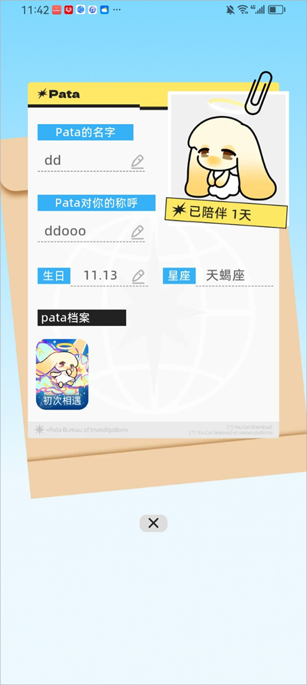

深度盘点 Pata：一只数字宠物能装下多少种玩法
Pata 把养成、社交、空间装扮、派对游戏揉成了同一个产品形态——本文从五个能力域拆解它到底能做什么、设计亮点在哪、哪些人值得长期留。
近两年国内移动游戏市场上，"轻养成"这个赛道变得很拥挤。养猫养狗、种菜浇水、收菜换装扮……大同小异的循环让玩家越来越挑剔。就在这片红海里，Pata 走了一条有点奇怪的路线——它的官网定位写得很明确：一只会跟你互动的小宠物，做成了一个钩子，然后往上面挂了共享空间、派对小游戏、轻量社交消息三套东西，结果还真就挂上了。
这篇盘点不急着站队，也不打算做"好不好玩"的主观判断。就一件事：把 Pata 到底有哪些能力、每个能力块设计了什么东西、以及它们之间怎么串起来，完整地捋一遍。玩过的人能从中捞到没注意到的细节，没玩过的看个全貌决定要不要入坑。
养成不是目的，是入口
Pata 的核心养成体系围绕"亲密度"这个隐藏变量展开。界面上没有进度条、没有数字，玩家只能从侧面判断它——日记的字数有没有变多、点它的时候反应有没有变丰富、会不会主动蹦过来蹭屏幕。这种"不显示数值"的设计本身就是个有意思的产品决策：你没法刷数据，只能老老实实每天来陪它玩几分钟——Pata文档里有玩家整理的实测推算。
亲密度的来源也不复杂。日常喂养和点击互动是基础，完成每天 2～3 个小任务能加一波，和好友一起在共享空间互动 Pata 时双方都涨——这一点是养成和社交的第一个交叉点。还有装扮解锁时的一次性加成。四个阶段解锁的标志分别是：日记有细节、出现专属动作、日记提到好友、解锁高亲密度装扮。断了几天亲密度不会掉，回来多互动就恢复，这意味着它不惩罚玩家的生活节奏，你忙你的、它等你。

共享空间：一个可以一起搭的家
如果说养成是钩子，共享空间就是 Pata 最有想象空间的模块。它不是一个人的小屋，是多人共创的——你可以邀请朋友进来一起摆家具、一起布置场景，家具商店里目前有客厅、卧室、厨房、装饰物品四大类，加上活动期间的主题限定款，价格区间从 20 星到 500 星不等。
摆放逻辑简单粗暴：从家具仓库拖出来、放、点着可以 90 度旋转、松手就固定。没有碰撞检测，家具可以叠在一起；每个空间有上限（四室一厅大约 150 件），防止堆到卡顿。挪动和回收仓库只有家具的主人能操作，其他共创者只能看——这个权限设计是为了避免多人一起搭的时候想法冲突，所有权先分开，协调起来有依据。
家具买了就不能退款，也不会绑在某个特定空间——在这个空间买的，可以拿到另一个空间摆，也可以拿到自己的个人小空间。这两个细节一个防冲动消费、一个给了物品流通的自由度，搭配起来让星星币的花销不那么焦虑。
社交频道：低压力才是它的核心特色
Pata 的好友消息系统可能是目前同类产品里最"反主流"的 IM 设计。它不带在线状态——你不知道朋友在不在、看没看到消息，没有"对方正在输入"、没有红点逼你去看、连已读回执都没有。想聊就聊、不想聊就放着，没人给你施加"看到了不回"的压力。
加好友也只能通过 ID 搜索或手机号匹配，没有左滑右滑、没有同城推荐、没有"可能认识的人"——完全不碰陌生人社交的赛道。消息的核心定位是"凑局用"：在聊天窗里可以直接邀请对方进你的共享空间、发起派对游戏、或者一起去做点什么事，消息本身不是终点，是通往其他模块的入口。群聊 2.2 版本才加的，支持 3～10 人，不带语音，主打组派对游戏。2.3 版本加入了 Pata 自己的专属表情包，卖萌、吐槽、开心各种都有，辨识度比系统表情高不少。
派对游戏：把线上社交拉在一起
派对游戏是 Pata 社交模块中最具"场景感"的环节——不像消息那样是碎片化的互动，派对游戏提供的是一段可以共同参与、共同决策、共同开心或尴尬的时间。虽然具体的游戏品类文档里没有展开太多，但从定位来看，这些小游戏应该是轻量级、短周期、不需要太高操作门槛的类型——毕竟核心目的不是竞技，是让朋友之间有个理由聚在一起。
派对游戏和消息系统、共享空间三者之间是互通的：消息里可以直接发起游戏邀请，游戏结束后可以直接跳回共享空间继续玩或者继续摆家具。整个社交链路没有断点。
付费体系：克制到令人意外
最后聊钱。Pata 的付费选项简单到离谱——只有月卡和限时礼包两种，没有皮肤赛季、没有通行证、没有抽卡。对比市面上同类应用的付费复杂度，Pata 在这点上几乎是个异类。
月卡 18 元/月，权益包括每日签到星星币翻倍（一个月能省约 1500 星）、每月一套专属装扮、寻宝冒险每日次数翻倍、桌面组件专属皮肤、装扮间更多预览功能。对于打算长期玩的用户来说，签到翻倍这一项一个月就能回本。限时礼包是活动期间的一次性购买，分主题装扮套装、家具大礼包、混合礼包三档，价格 6～30 元不等，错过就没了，不会返场复刻。
月卡适合每天能打开 5 分钟以上的长期玩家，礼包适合刚好喜欢某个主题装扮的用户。但其实 Pata 的所有核心玩法都是免费的——养 Pata、开派对游戏、建共享空间都不花钱，付费只影响外观和进度加速。这个边界划得很清楚，想试试的话从Pata下载拿安装包就行。
短板也要说
盘点到这里，Pata 不是没有问题的。几个比较明显的：
- 家具摆放没有碰撞检测，叠在一起视觉会乱，虽然官方说就是让用户随便玩，但多人共创时这个问题会被放大。
- 家具不支持退款，买错了或者冲动消费只能认，虽然有装扮间的预览功能但还是挡不住手滑。
- 消息不支持云端同步，换设备聊天记录会丢，对于重度社交用户来说体验打折。
- 亲密度系统没有任何官方数值，全靠社区玩家实测推算，虽然设计意图是好的，但对于喜欢钻研数据的硬核用户来说可能不太友好。
这些都不是致命伤，但能看出 Pata 目前更偏向"先把框架搭起来再补细节"的阶段。
什么样的人该用它
盘点完所有能力域，最后给一个用户画像。Pata 适合以下几类人：
想找点轻量娱乐的上班族。每天上班前、午休、睡前各花 5 分钟——喂一下 Pata、看一眼日记、翻一下有没有好友邀请。不需要投入大块时间，也不会因为几天没打开就觉得对不起什么。
已经有一群固定朋友、想找个共同的"线上小窝"的人。Pata 不做陌生人社交，它的社交功能全是为"已经认识的人"设计的。如果你有三五好友想一起搭个空间、一起玩点小游戏，Pata 是目前市场上少有的能同时满足这几样的产品。
对"养成 + 社交 + 装扮"这个组合好奇、又不想被付费机制绑架的人。Pata 的付费体系是真的克制，月卡 18 元、礼包几十块，不买也完全不影响核心体验。比起那些不氪金就玩不下去的同类游戏，Pata 的底线守得比较清楚。相关资料在GitHub、Gitee、GitCode 都能找到备份，国内外访问都方便。